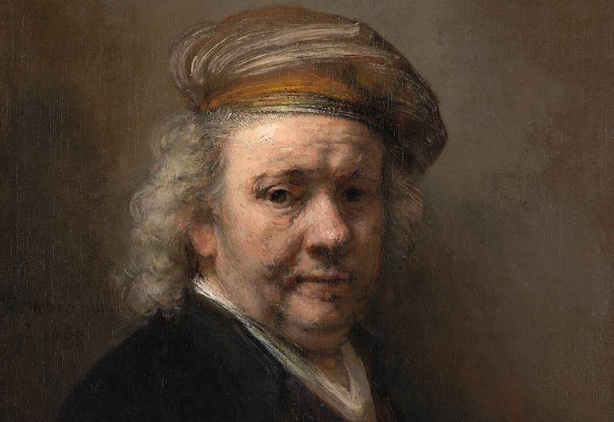
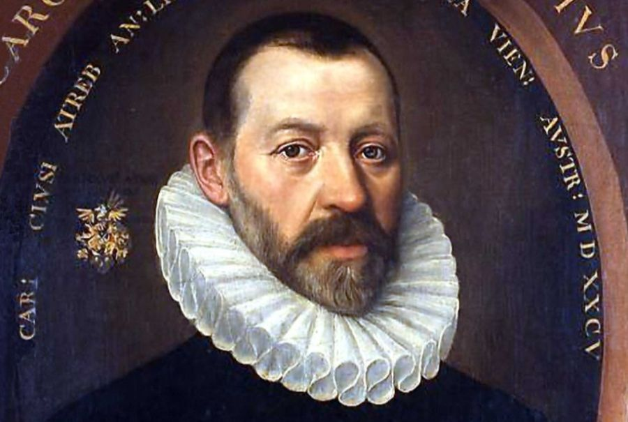

Rembrandt van Rijn
Born: 1606
One of the most famous painters in history, Rembrandt was born in Leiden and became a master of light and shadow. His works include timeless masterpieces like "The Night Watch" and "The Anatomy Lesson of Dr. Nicolaes Tulp." Leiden takes pride in being the birthplace of this iconic Dutch artist.
- Famous for his portraits and self-portraits
- Known as a master of chiaroscuro (contrast of light and shadow)
- Influenced generations of artists worldwide

Carolus Clusius
Born: 1526
Clusius was a renowned botanist whose work laid the foundation for the Dutch tulip trade. He introduced many plants to the Netherlands, including the tulip, which later became a national symbol. As the founder of the Hortus Botanicus in Leiden, Clusius contributed to the city's scientific legacy.
- Founder of Leiden's botanical garden
- Introduced the tulip to Dutch horticulture
- Major influence on European botanical science

Trkie Al Fares
Born: 2001
Trkie is an innovative student in Leiden, where he dives into tech and design. Known for his creativity, he blends art and technology seamlessly. Trkie loves exploring the city’s vibrant culture, often finding inspiration in its history. His peers admire his unique ideas and adventurous spirit.
- Speaks 7 languages fluently
- 2nd Best Destiny Player in Kuwait
- Knows every single meme